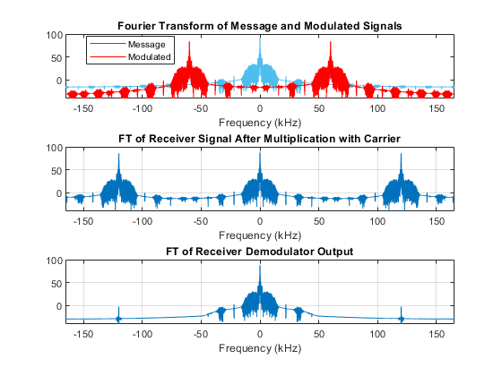
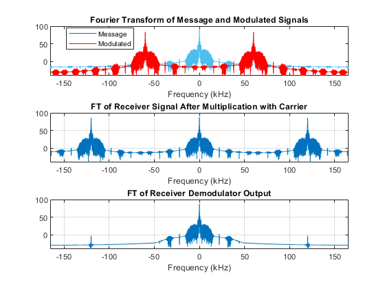

Contents
- DSB-SC Modulator/Demodulator Example
- Program Initialization
- Read Song File
- Display the whole song
- Generate Modulated Signal
- Display the Segments of Signal and Modulated Signal
- The DSB-SC Receiver Processing
- Fourier Transforms of Song, Modulated and Demodulated Signals
- Display the Original Song and the Receiver Output Segments
- Plotting Impact of Receiver Oscillator's Phase Difference
- Frequency Division Multiplexing for DSB-SC
DSB-SC Modulator/Demodulator Example
This documents describes/implements the DSB-SC modulation and demodulation of a song signal.
Prepared for ELEC 301
by Alper T. Erdogan
*12.03.2020*
Program Initialization
%Clear Variables and Close All Figure Windows % Clear all previous variables clear % Close all previous figure windows close all
Read Song File
song.mat contains song variable containing Song samples and Fs which is the sampling frequency
% Load the song file load song.mat % song is the song samples % Fs is the sampling frequency % Transform the song to low rate sampling for listening (sound command % requires sampling rate to be less than 44K songlowrate=downsample(song,10); % Listen to sound(songlowrate,Fs/10); % convert it to row array song=reshape(song,1,length(song)); % Sampling Period Ts=1/Fs; % Sampling times t=(0:1:(length(song)-1))*Ts;
Display the whole song
% Display the whole song figure(1) plot(t,song); grid title('Whole song signal'); xlabel('Time (seconds)');
Generate Modulated Signal
Generate carrier signal and multiply with the song signal to obtain DSB-SC modulated waveform
Carrier frequency:
fc=60e3; % 60 kHz;
Carrier signal:
c=cos(2*pi*fc*t);
DSB-SC Modulated waveform
x=song.*c;
Display the Segments of Signal and Modulated Signal
Display small section of the original signal and then the DSB-SC modulated version
figure(2) % plot the song segment (for about 3000 samples) subplot(2,1,1) plot(t(1:3000)*1000, song(1:3000)); xlabel('Time (msecs)') title('Song Signal Segment ') grid subplot(2,1,2) % plot the modulated signal plot(t(1:3000)*1000,x(1:3000),'r'); hold on % plot also positive and negative envelopes p1=plot(t(1:3000)*1000,song(1:3000),'k'); p2=plot(t(1:3000)*1000,-song(1:3000),'k'); xlabel('Time (msecs)') set(p1,'LineWidth',3) set(p2,'LineWidth',3) grid title('DSB-SC Modulated Signal Segment')
The DSB-SC Receiver Processing
Coherent DSB-SC Receiver operation
First multiply with the receiver carrier (which is assumed to be in phase)
q = 0:20;
q = q.*pi.*0.1;
for i = 1:21
y =2*x.*cos(2*pi*fc*t+q(i));
Then low pass filter this signal
z = lowpass(y,30e3,Fs); maxrecorded(i) = max(abs(z(40000:60000)));
Fourier Transforms of Song, Modulated and Demodulated Signals
Calculate and Display the Fourier Transforms of the song,modulated and demodulated signals
Calculate the Fourier Transform of the song signal
[ftsong,freqs]=fouriertransform(song, Fs);
Calculate the Fourier Transform of the DSB-SC signal
[ftx,~]=fouriertransform(x,Fs);
Calculate Fourier Transform after receiver carrier multiplication
[fty,freqs]=fouriertransform(y,Fs);
Calculate Fourier Transform of the receiver output
[FTz,freqs]=fouriertransform(z,Fs);
Display these Fourier Transforms
figure(3) subplot(3,1,1); plot(freqs/1000, 20*log10(abs(ftsong))); hold on plot(freqs/1000, 20*log10(abs(ftx)),'r'); grid legend('Message','Modulated','Location','Best') xlabel('Frequency (kHz)'); title('Fourier Transform of Message and Modulated Signals') axis([-Fs/2000 Fs/2000 -40 100]) subplot(3,1,2); plot(freqs/1000, 20*log10(abs(fty))); axis([-Fs/2000 Fs/2000 -40 100]) grid xlabel('Frequency (kHz)'); title('FT of Receiver Signal After Multiplication with Carrier') subplot(3,1,3) plot(freqs/1000, 20*log10(abs(FTz))); axis([-Fs/2000 Fs/2000 -40 100]) grid xlabel('Frequency (kHz)') title('FT of Receiver Demodulator Output')

 
 Display the Original Song and the Receiver Output Segments
They are hardly distinguishable!
figure(4) plot(t(40000:190000)*1000,song(40000:190000)) hold on plot(t(40000:190000)*1000,z(40000:190000),'r:') grid xlabel('Time (msec)'); ylabel('Waveform'); legend('Original','Received','Location','Best');


Plotting Impact of Receiver Oscillator's Phase Difference
end figure(5) plot(q, maxrecorded); hold on xlabel('the receiver oscillators phase value'); ylabel('the maximum absolute receiver output values'); title('Impact of Receiver Oscillators Phase Difference'); grid

Frequency Division Multiplexing for DSB-SC
triangle=@(t) 2*(abs(mod((2*t+1), 2)-1))-1; f2=150e3; twave=triangle(3e3*t) ; c2=cos(2*pi*f2*t); x=song.*c+twave.*c2; y2=2*x.*c2; z2= lowpass(y2,30e3,Fs); %[t,freqs]=fouriertransform(twave,c2); figure(6) subplot(4,1,1); plot(t(1:3000)*1000,z(1:3000),'r'); grid xlabel('time msec'); title('time of z'); subplot(4,1,2); plot(freqs/1000, 20*log10(abs(FTz))); grid xlabel('frequency khz'); title('ft of z'); subplot(4,1,3); plot(t(1:3000)*1000,z2(1:3000),'r'); grid xlabel('time msec'); title('wave of z2'); axis([0 1 -2 2]); subplot(4,1,4); plot(freqs/1000, 20*log10(abs(FTz2))); grid xlabel('frequency khz'); title('ft of z2');
Unrecognized function or variable 'FTz2'. Error in ExampleDSBSC (line 252) plot(freqs/1000, 20*log10(abs(FTz2)));